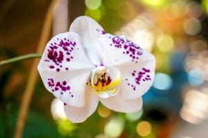

Rose
Easy Steps to Grow Roses at Home
1. Choose the Right Pot & Soil
- Use a deep pot (10-12 inches) with good drainage.
- Well-draining soil with organic compost is ideal.
2. Planting Roses
- Use rose seeds, cuttings, or nursery plants.
- Plant in soil ensuring roots are well covered.
3. Sunlight & Temperature
- Needs 6+ hours of direct sunlight.
- Ideal temperature: 15°C - 30°C.
4. Watering
- Water deeply 2-3 times a week.
- Avoid overwatering to prevent root rot.
5. Fertilization & Maintenance
- Use organic fertilizers or compost every 3-4 weeks.
- Prune regularly to encourage more blooms.
Benefits of Roses
Natural skin toner & anti-aging properties.
Enhances mood with a relaxing fragrance.
Rich in Vitamin C, boosts immunity.
Used in herbal teas for digestion & stress relief.
Acts as a natural air freshener.

Hibiscus
Easy Steps to Grow Hibiscus at Home
1. Choosing the Right Pot & Soil
- Use a large pot (12 inches or more) with drainage holes.
- Well-draining, nutrient-rich soil is best.
2. Planting the Hibiscus
- Can be grown from seeds, cuttings, or nursery plants.
- Ensure the roots are well-covered with soil.
3. Sunlight & Temperature
- Needs 5-6 hours of direct sunlight daily.
- Prefers warm temperatures (20°C - 35°C).
4. Watering Schedule
- Water regularly but avoid waterlogging.
- Reduce watering in winter.
5. Fertilization & Pruning
- Apply organic fertilizer every 2-3 weeks for best blooms.
- Prune regularly to maintain shape and encourage flowering.
Benefits of Hibiscus
Boosts hair growth & prevents dandruff.
Helps lower blood pressure.
Rich in antioxidants, improves skin health.
Used in herbal teas for digestion & immunity.
Attracts butterflies & enhances garden beauty.
Zinnia
Easy Steps to Grow Zinnia at Home
1. Choosing the Right Pot & Soil
- A medium pot (8-10 inches deep) is sufficient.
- Well-draining, loamy soil is best.
2. Planting Zinnia
- Grows best from seeds, sown directly in soil.
- Space seeds 6-12 inches apart for bushy growth.
3. Sunlight & Temperature
- Thrives in full sun (6+ hours daily).
- Prefers warm temperatures (18°C - 32°C).
4. Watering Needs
- Water when topsoil is dry (once every 3-4 days).
- Avoid overhead watering to prevent mildew.
5. Fertilization & Maintenance
- Use balanced fertilizer every 2-4 weeks for best blooms.
- Deadhead (remove old flowers) to encourage new blooms.
Benefits of Zinnia
Low maintenance & drought-resistant.
Attracts butterflies & pollinators.
Long-lasting, vibrant flowers.
Improves garden aesthetics with colorful blooms.
Excellent for floral decorations & bouquets.

Dahlia
Easy Steps to Grow Dahlia at Home
1. Choosing the Right Pot & Soil
- Use a large pot (12-14 inches deep) with drainage holes.
- Well-draining, fertile soil enriched with compost.
2. Planting Dahlias
- Grows best from tubers (bulbs) or cuttings.
- Plant tubers 4-6 inches deep in soil.
3. Sunlight & Temperature
- Requires 6+ hours of direct sunlight.
- Prefers warm temperatures (15°C - 30°C).
4. Watering Needs
- Water deeply 2-3 times a week.
- Avoid waterlogging to prevent rot.
5. Fertilization & Pruning
- Use a low-nitrogen fertilizer every 3 weeks.
- Deadhead (remove old flowers) for continuous blooming.
Benefits of Dahlia
Bright, long-lasting flowers for decoration.
Attracts butterflies & pollinators.
Enhances garden aesthetics.
Can be used in floral arrangements & bouquets.
Symbolizes strength and creativity.

Lantana
Easy Steps to Grow Lantana at Home
1. Choosing the Right Pot & Soil
- Use a medium-sized pot (8-12 inches deep) with drainage holes.
- Well-draining, sandy or loamy soil is ideal.
2. Planting Lantana
- Can be grown from seeds or cuttings.
- Plant in soil ensuring roots are well covered.
3. Sunlight & Temperature
- Needs full sun (6+ hours daily).
- Thrives in warm temperatures (20°C - 35°C).
4. Watering Needs
- Water when the topsoil is dry.
- Drought-resistant; avoid overwatering.
5. Fertilization & Maintenance
- Use compost or slow-release fertilizer once a month.
- Trim regularly to keep it bushy and encourage blooms.
Benefits of Lantana
Attracts butterflies & hummingbirds.
Low maintenance & drought-resistant.
Used for natural pest control in gardens.
Produces vibrant flowers all year round.
Can be used for ground cover or hanging baskets.

Periwinkle
Easy Steps to Grow Periwinkle at Home
1. Choosing the Right Pot & Soil
- Use a small to medium-sized pot (6-10 inches deep).
- Well-draining, sandy soil with compost is ideal.
2. Planting Periwinkle
- Grows best from seeds or stem cuttings.
- Plant seeds/cuttings in soil and water lightly.
3. Sunlight & Temperature
- Thrives in full sun to partial shade.
- Ideal temperature: 18°C - 32°C.
4. Watering Needs
- Water once every 2-3 days (reduce in winter).
- Avoid excessive watering to prevent fungal diseases.
5. Fertilization & Maintenance
- Use organic fertilizer every 4-6 weeks.
- Trim regularly for bushy growth and more blooms.
Benefits of Periwinkle
Beautiful ground cover with continuous blooms.
Attracts pollinators like bees and butterflies.
Drought-resistant and easy to maintain.
Used in herbal medicine for improving blood circulation.
Helps in preventing soil erosion in gardens.

Morning Glory
Easy Steps to Grow Morning Glory at Home
1. Choosing the Right Pot & Soil
- Use a deep pot (12 inches or more) with good drainage.
- Well-draining, nutrient-rich soil is best.
2. Planting Morning Glory
- Grows best from seeds soaked overnight before planting.
- Plant seeds 1/4 inch deep and keep the soil moist.
3. Sunlight & Temperature
- Requires full sun (6+ hours daily).
- Thrives in warm temperatures (20°C - 30°C).
4. Watering Needs
- Water regularly but avoid waterlogging.
- Reduce watering in cooler months.
5. Fertilization & Maintenance
- Use a balanced fertilizer once a month.
- Provide a trellis or support for climbing.
Benefits of Morning Glory
Fast-growing climber for fences & trellises.
Attracts butterflies & pollinators.
Produces vibrant trumpet-shaped flowers.
Helps prevent soil erosion in gardens.
Enhances garden aesthetics with bright blooms.

Peace Lily
Easy Steps to Grow Peace Lily at Home
1. Choosing the Right Pot & Soil
- Use a medium-sized pot (8-12 inches deep) with drainage holes.
- Well-draining, peat-based soil is ideal.
2. Planting Peace Lily
- Grows well from nursery plants or divisions.
- Ensure the roots are covered with moist soil.
3. Sunlight & Temperature
- Prefers indirect sunlight or partial shade.
- Thrives in warm temperatures (18°C - 30°C).
4. Watering Needs
- Water once the topsoil feels dry (1-2 times a week).
- Avoid overwatering to prevent root rot.
5. Fertilization & Maintenance
- Feed with diluted liquid fertilizer every 6 weeks.
- Wipe leaves regularly to keep them dust-free.
Benefits of Peace Lily
Natural air purifier, removes toxins.
Low-maintenance and thrives in low light.
Produces elegant white flowers year-round.
Increases humidity, improving indoor air quality.
Symbolizes peace and harmony in homes.

African Violet
Easy Steps to Grow African Violets at Home
1. Choosing the Right Pot & Soil
- Use a small to medium-sized pot (6-8 inches deep).
- Well-draining, peat-based soil is best.
2. Planting African Violet
- Grows from leaf cuttings or nursery plants.
- Keep soil slightly moist, not soggy.
3. Sunlight & Temperature
- Prefers bright, indirect light.
- Thrives in warm temperatures (18°C - 27°C).
4. Watering Needs
- Water with room-temperature water from the bottom.
- Avoid getting water on leaves to prevent rot.
5. Fertilization & Maintenance
- Use a balanced liquid fertilizer every 2 weeks.
- Remove dead flowers to encourage new blooms.
Benefits of African Violet
Compact, perfect for indoor spaces.
Blooms year-round in various colors.
Improves indoor air quality.
Brings positive energy and calmness.
Easy to propagate for more plants.
Begonia
Easy Steps to Grow Begonia at Home
1. Choosing the Right Pot & Soil
- Use a small to medium-sized pot (6-10 inches deep) with drainage holes.
- Well-draining, peat-based soil is ideal.
2. Planting Begonia
- Can be grown from seeds, bulbs, or cuttings.
- Plant tubers just below the soil surface.
3. Sunlight & Temperature
- Prefers bright, indirect light or partial shade.
- Thrives in temperatures of 18°C - 25°C.
4. Watering Needs
- Keep the soil moist but avoid overwatering.
- Water at the base to prevent leaf rot.
5. Fertilization & Maintenance
- Use liquid fertilizer every 2 weeks during growth.
- Remove dead flowers to encourage blooming.
Benefits of Begonia
Beautiful, colorful flowers for decoration.
Ideal for both indoor and outdoor spaces.
Low maintenance & grows well in shade.
Air-purifying properties improve indoor air quality.
Easy to propagate from cuttings.

Anthurium
Easy Steps to Grow Anthurium at Home
1. Choosing the Right Pot & Soil
- Use a medium-sized pot (8-12 inches deep) with drainage holes.
- Well-draining, orchid mix or peat-based soil is ideal.
2. Planting Anthurium
- Best grown from nursery plants or root divisions.
- Ensure the roots are covered but not too deep.
3. Sunlight & Temperature
- Prefers bright, indirect light (avoid direct sun).
- Thrives in warm temperatures (20°C - 30°C).
4. Watering Needs
- Water when the topsoil feels dry (1-2 times a week).
- Mist occasionally to maintain humidity.
5. Fertilization & Maintenance
- Use a balanced liquid fertilizer every month.
- Wipe leaves regularly to keep them dust-free.
Benefits of Anthurium
Adds a tropical touch with vibrant red flowers.
Natural air purifier, removes toxins.
Low-maintenance and easy to grow indoors.
Increases humidity, improving indoor air quality.
Symbolizes hospitality and happiness.

Geranium
Easy Steps to Grow Geranium at Home
1. Choosing the Right Pot & Soil
- Use a medium-sized pot (8-12 inches deep) with drainage holes.
- Well-draining, sandy soil mixed with compost.
2. Planting Geranium
- Can be grown from seeds or stem cuttings.
- Plant in moist soil and press lightly.
3. Sunlight & Temperature
- Requires full sun (6+ hours daily).
- Thrives in temperatures of 15°C - 27°C.
4. Watering Needs
- Water deeply once the soil dries out (2-3 times a week).
- Avoid overwatering to prevent root rot.
5. Fertilization & Maintenance
- Use a balanced fertilizer every 3-4 weeks.
- Trim regularly to promote bushy growth and flowering.
Benefits of Geranium
Beautiful, fragrant flowers for home gardens.
Attracts butterflies and pollinators.
Used in herbal medicine for skin care.
Acts as a natural insect repellent.
Can be grown in pots, hanging baskets, or garden beds.

Orchid
Easy Steps to Grow Orchids at Home
1. Choosing the Right Pot & Soil
- Use a small to medium-sized pot with drainage holes.
- Best grown in an orchid mix (bark, charcoal, perlite).
2. Planting Orchids
- Can be grown from nursery plants or divisions.
- Keep roots exposed to air, do not bury in soil.
3. Sunlight & Temperature
- Prefers bright, indirect sunlight.
- Thrives in warm temperatures (18°C - 28°C).
4. Watering Needs
- Water once a week (let roots dry between watering).
- Mist leaves to maintain humidity.
5. Fertilization & Maintenance
- Use a weak orchid fertilizer every 2 weeks.
- Trim dead roots and flowers to promote growth.
Benefits of Orchids
Elegant, long-lasting flowers for decoration.
Improves indoor air quality.
Low-maintenance and easy to grow indoors.
Comes in a variety of colors and patterns.
Symbolizes love, beauty, and strength.

Impatiens
Easy Steps to Grow Impatiens at Home
1. Choosing the Right Pot & Soil
- Use a medium-sized pot (8-12 inches deep).
- Well-draining, organic-rich soil is ideal.
2. Planting Impatiens
- Can be grown from seeds or nursery plants.
- Plant in moist soil and press lightly.
3. Sunlight & Temperature
- Prefers partial shade or indirect sunlight.
- Thrives in temperatures (15°C - 25°C).
4. Watering Needs
- Water regularly to keep soil consistently moist.
- Avoid overwatering to prevent root rot.
5. Fertilization & Maintenance
- Use a balanced fertilizer every 2 weeks.
- Pinch back stems to encourage bushy growth.
Benefits of Impatiens
Beautiful, colorful flowers for shady spots.
Attracts butterflies and pollinators.
Easy to grow in pots, hanging baskets, and garden beds.
Adds bright, continuous blooms throughout the season.
Low-maintenance and perfect for beginners.

Snapdragon
Easy Steps to Grow Snapdragon at Home
1. Choosing the Right Pot & Soil
- Use a medium to large pot (8-12 inches deep).
- Well-draining, loamy soil is best.
2. Planting Snapdragon
- Grows best from seeds or nursery plants.
- Keep soil moist until seedlings appear.
3. Sunlight & Temperature
- Requires full sun (6+ hours daily).
- Thrives in cool temperatures (10°C - 24°C).
4. Watering Needs
- Water deeply once or twice a week.
- Reduce watering in winter.
5. Fertilization & Maintenance
- Use a balanced fertilizer every 3-4 weeks.
- Deadhead flowers to encourage continuous blooms.
Benefits of Snapdragon
Vibrant, dragon-shaped flowers for decoration.
Attracts bees, butterflies, and hummingbirds.
Cold-resistant and blooms in early spring.
Can be used as cut flowers for arrangements.
Comes in various colors, adding diversity to gardens.

Lilies
Easy Steps to Grow Lilies at Home
1. Choosing the Right Pot & Soil
- Use a deep pot (10-12 inches) with drainage holes.
- Well-draining, sandy or loamy soil is ideal.
2. Planting Lilies
- Grows best from bulbs, planted 3 inches deep.
- Space bulbs 4-6 inches apart for better growth.
3. Sunlight & Temperature
- Requires full sun (6+ hours daily).
- Thrives in temperatures (15°C - 27°C).
4. Watering Needs
- Water deeply once a week.
- Avoid overwatering to prevent bulb rot.
5. Fertilization & Maintenance
- Use a balanced fertilizer every 2-3 weeks.
- Remove faded flowers to encourage reblooming.
Benefits of Lilies
Beautiful, fragrant flowers for gardens & homes.
Attracts butterflies and pollinators.
Available in various colors and patterns.
Used in floral arrangements and perfumes.
Symbolizes purity, love, and peace.
Adenium (Desert Rose)
Easy Steps to Grow Adenium at Home
1. Choosing the Right Pot & Soil
- Use a small to medium-sized pot (8-12 inches deep).
- Well-draining cactus or succulent mix is ideal.
2. Planting Adenium
- Can be grown from seeds or stem cuttings.
- Ensure roots are not buried too deep.
3. Sunlight & Temperature
- Requires full sun (6+ hours daily).
- Thrives in warm temperatures (20°C - 35°C).
4. Watering Needs
- Water once every 7-10 days (reduce in winter).
- Avoid overwatering to prevent root rot.
5. Fertilization & Maintenance
- Use a slow-release fertilizer every month.
- Trim excess branches for better shape.
Benefits of Adenium
Unique, bonsai-like appearance with thick stems.
Beautiful pink, red, or white flowers.
Low-maintenance and drought-tolerant.
Ideal for indoor and outdoor decoration.
Symbolizes resilience and strength.
Cherry Blossom
Easy Steps to Grow Cherry Blossom at Home
1. Choosing the Right Pot & Soil
- Use a large pot (12-16 inches deep) with drainage holes.
- Well-draining, loamy soil with compost is best.
2. Planting Cherry Blossom
- Grows best from saplings or grafted plants.
- Space well to allow proper root expansion.
3. Sunlight & Temperature
- Requires full sun (6-8 hours daily).
- Thrives in cooler temperatures (10°C - 20°C).
4. Watering Needs
- Water deeply twice a week (more in summer).
- Reduce watering in the dormant season.
5. Fertilization & Maintenance
- Use a balanced fertilizer in spring & summer.
- Prune branches to maintain shape.
Benefits of Cherry Blossom
Stunning pink & white blossoms in spring.
Adds a calming, aesthetic touch to gardens.
Symbolizes renewal, hope, and beauty.
Provides shade and attracts birds & pollinators.
Grows well in cooler climates.